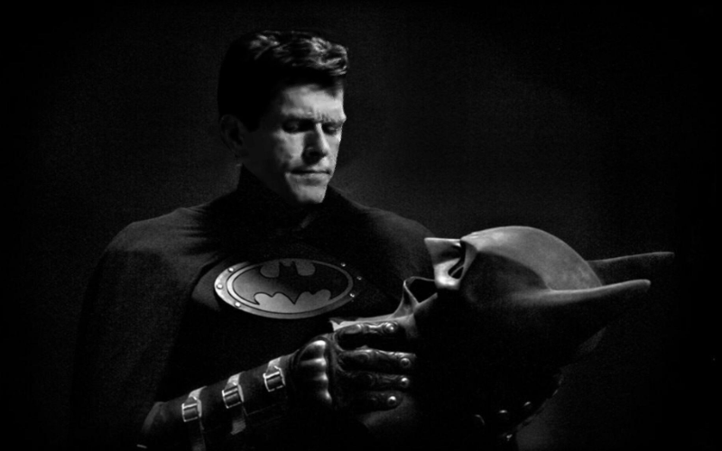

BECOMING BATMAN
The Man
Kevin Conroy is best known for his starring role as Bruce Wayne and his alter ego Batman, from the award winning show Batman: The Animated Series

There are many iterations of Batman but few have played the role longer than Kevin, his dedication to the craft of both Bruce Wayne and Batman are far more impressive when you know realise some of the similarities Kevin went through in his life. For several generations, when you asked who was the the definitive Batman people would say Kevin Conroy.
The reason his depiction of Batman works so well may be that he draws of real events from his own life. These events molded him and allows him to give truthful and emotional range that you wouldn't expect from what was supposed to be considered a childrens superhero cartoon. Batman is born from tradegy but is reforged into hope to give strength to those struggling. As you read on you will see the hardships Kevin faced throughout his life but still he persevered.
"Maybe that's what Batman is about. Not winning, but failing, and getting back up. Knowing he'll fail, fail a thousand times, but still won't give up." -- Batman, Zero Year
Early Life
It wasn't an easy life It was a rocky upbringing in the Conroy house, born into a disfuctional family. Kevin and his older siblings had to deal with an alcoholic and abusive father. His siblings moved out as soon as they could leaving kevin and his mother to deal with his father. Things got so bad at one point his father attempted suicide while Kevin Conroy was in High School.
Eventually his father was taken away and Kevin and his mother had short period of peace before his father returned, his mother moved out leaving him to deal with his father on his own. At the age of 16 he left home to stay with a friends family to finish his high school.
Kevin believes theatre saved him, all thanks to an english teacher Joyce Wilkes. Which he believes saw something in him that nobody else had. He believes she saved his life by giving him an outlet to be more and because of this small push he ended up landing a lead character role in a school play. So he developed a great love for theatre and acting and managed to get a scholarship to Juilliard school to study drama and moved to new york at the age of 17
While attending school he roomed with Robin Williams and Kelsey Grammer, he almost roomed with Christopher Reeve but the apartment was a little too expensive.
(Batman and Superman could have been roomies but instead Batman roomed with Robin ..Robin williams.)
He studyied under the actor and teacher John Houseman, he toured with Houseman's acting group 'The Acting Company'. While working with Brian Bedford he was given some advice about his father. "When your father dies you'll never get a chance to correct that relationship." He followed this advice and managed to reconcile with his father and was there for him at the end for both of his mother and father.
Kevin admitted that his relationship with Brian was fracious at points. So much so that they even broke out into fights mid performance.
Career
Early career work were mostly stage performances when Conroy toured with The Acting Company by 1985 he had performed in many shows at the theatre such as: A Midsummers Night's Dream, Eastern Standard, Hamlet, Lolita and many more.
Conroy did a lot of television work as well landing some guest roles on a few popular shows like Cheers and Matlock.
Other set backs in his Career came from the film and tv idustries predjudice against hiring gay people. Especially with the AID's epidemic on going he struggled to find work, he also had to deal with the great loss of many friends.
Conroy had aquired the family home of his late father which is where his brother lived as it was familiar so Kevin worked primarily out of new york so he could always visit to make sure things were okay Conroy's sibling suffered from mental breaks and inbetween work he tried to make sure his brother was looked after.
Kevin happened to be doing a pilot for a new show LA, out of the blue he was contacted for some voice overwork for a new show. He was asked to voice one character in particular. Batman. Andrea Romano had been searching for the voice of Batman for sometime and claims she had heard over 500 actors and not one of them had the right depth and feel.
Conroy nailed the audition as he was able to put himself in the place of the character. Batman the animated series had an amazing cast and crew and the show won four Emmy Awards. This was the beginning of a role of a life time for Kevin, he would reprise the role for multiple adaptations, new Batman series, films and games.
The end of a Legend
For 30 years Kevin Conroy was the voice of Batman.
Kevin Conroy died on the 10th of November 2022, at the age of 66 from colorectal cancer. He had not publicly disclosed his illness so it was a shock to most of the world.
Conroy's death was announced by Warner Bros and it quickly became international news, fans from all over flocked to social media in response to his death, people who paid tribute were some of his co-stars and DC comics gave free access to comic written by Conroy himself called "Finding Batman" In this short graphic novel you see times that Kevin had deal with family issues and world predjudiceas well as the loss of friends which in the end created something he could draw upon a strength which he used to become Batman. Kevin didn't realise till much later in life the impact he had on people until he started attending comicon.